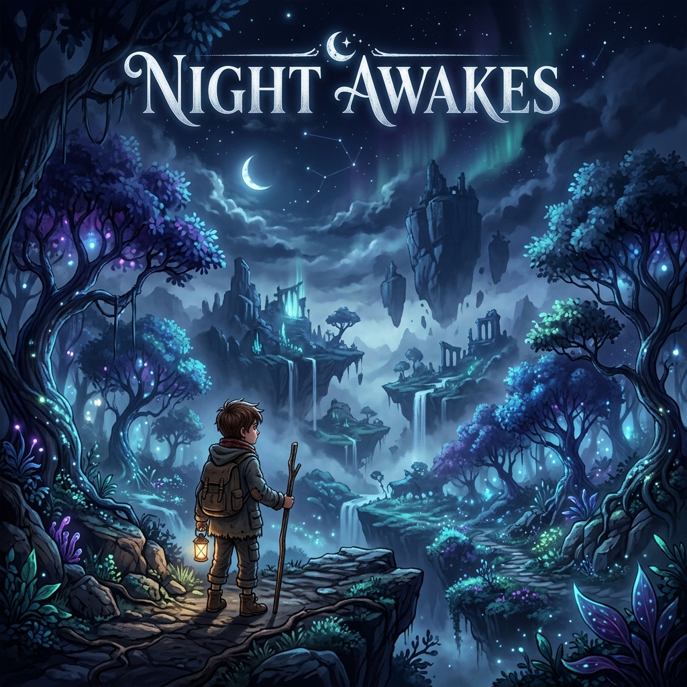
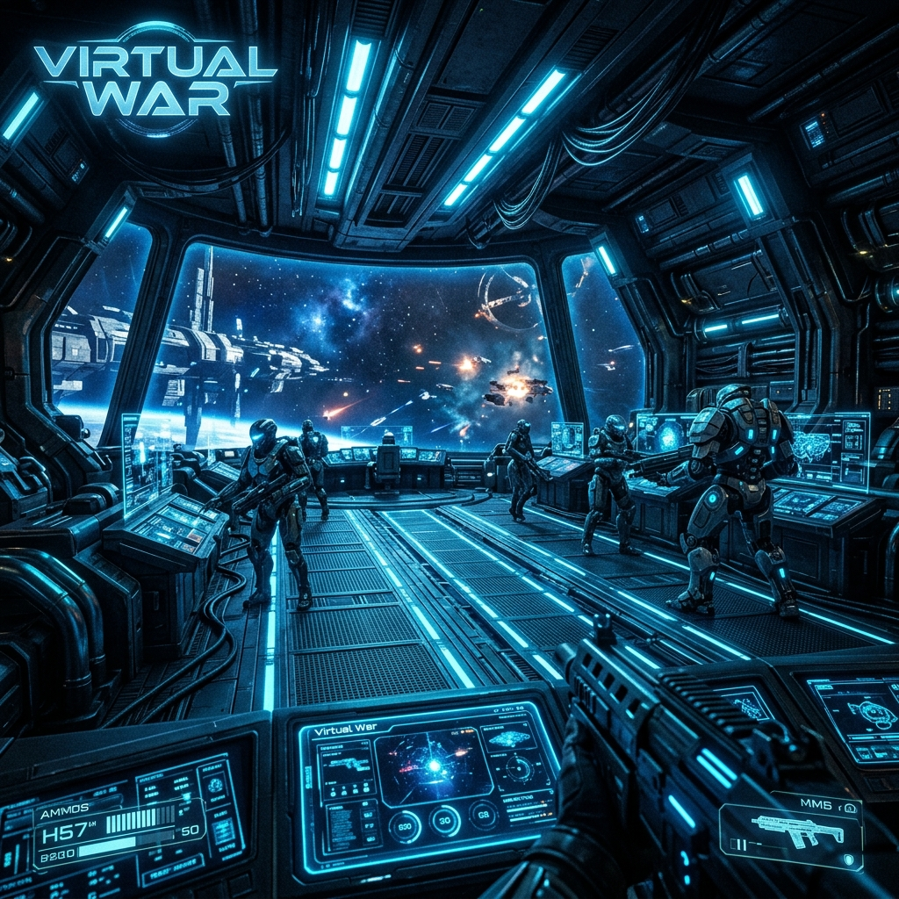
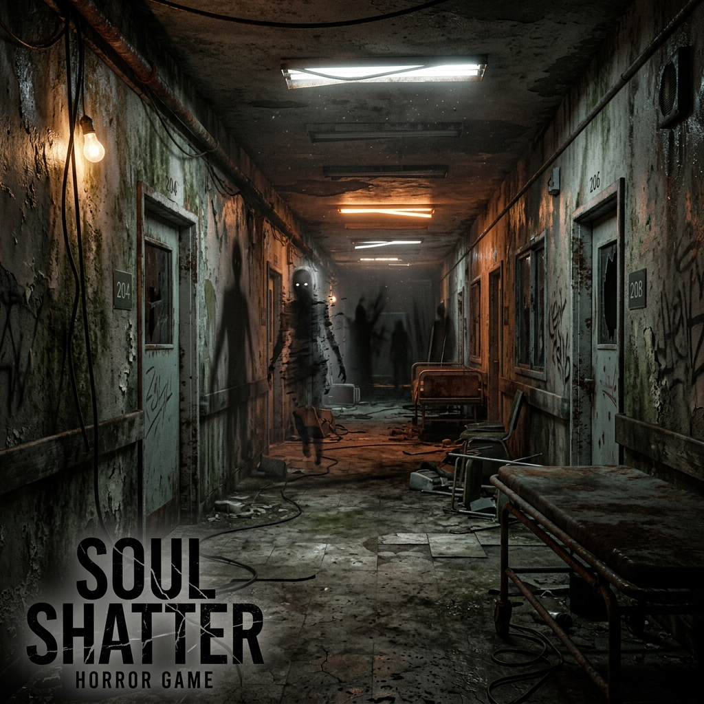

Manuel Sánchez Desarrollador Unity & Especialista XR
Desarrollador de Software especializado en simulaciones industriales de alta fidelidad y tecnologías inmersivas. Experto en el ecosistema Unity y flujos de trabajo XR, dedicado a la arquitectura de sistemas escalables y experiencias interactivas de alto rendimiento.
Perfil Profesional
Desarrollador de Software especializado en el ecosistema Unity y tecnologías XR (VR/AR). Mi enfoque combina una base técnica rigurosa forjada en 42 Málaga, centrada en sistemas de bajo nivel en C y C++, con la visión creativa de mis estudios de Máster. Actualmente, mi trabajo se centra en el desarrollo de simulaciones profesionales y herramientas interactivas, priorizando la eficiencia algorítmica y la ejecución técnica de alto rendimiento.
Trayectoria Profesional
Desarrollador Unity
Visual SafetyArquitectura de simulaciones industriales y soluciones de entrenamiento XR. Implementación de sistemas técnicos complejos para entornos críticos de seguridad y experiencias interactivas de realidad virtual.
Instructor Técnico
Algorithmics España (Mayo - Sep)Impartición de talleres técnicos avanzados y mentoría profesional en lógica de programación, arquitectura de software y diseño de sistemas.
Profesor de Programación (Remoto)
Coding Giants (Nov - Mayo)Enseñanza de algoritmos complejos y principios de ingeniería de software en entornos distribuidos para una base de estudiantes internacional.
Desarrollador & Diseñador
Three Golden Monkeys (Ene - Abr)Ingeniería de la arquitectura técnica y sistemas de juego para el prototipo 'Zombie Strike', optimizando mecánicas de combate y ciclos de juego principales.
Ingeniero QA & Programador
Mindiff (Abr - Jun)Ejecución de QA técnico de alto nivel y remediación de errores para el título AAA 'The Immortal Mystic', garantizando estabilidad de rendimiento en versiones de producción.
Beta Tester Técnico
Kaiju Games (Feb - Mar)Realización de pruebas sistemáticas para el proyecto 'EduZland', enfocándome en la estabilidad de la experiencia de usuario y validación técnica de rendimiento.
Stack Técnico
Motores & XR
Lenguajes & Sistemas
Pipeline & Production
Especialista en Unity (C#) y Unreal (C++). Optimización de draw calls y sistemas de físicas.
Desarrollo para Meta Quest, HoloLens y SteamVR. Implementación de AR Foundation.
Patrones de diseño avanzados, gestión de memoria y arquitectura de sistemas escalables.
Proyectos Seleccionados



Interactúa con mis Diseños (3D/AR)
Usa tu ratón para rotar el modelo. En móviles, pulsa el botón para proyectarlo en tu habitación.
Formación Académica
Estudiante de Programación
42 Málaga Fundación TelefónicaCurrículo intensivo basado en proyectos con enfoque en ingeniería de sistemas de bajo nivel, complejidad algorítmica y gestión de memoria en C/C++.
Máster en Desarrollo de Videojuegos
EVADEspecialización avanzada en arquitectura de motores, diseño técnico de juegos e ingeniería de software sistémica.
Grado Superior en Creación y Diseño
EVADFundamentos de diseño interactivo, arte técnico y programación aplicada a entornos digitales.
Arcade Terminal
🧩 Fix the Code (Puzzle)
Ordena las piezas para estabilizar el sistema.
🏃 Cyber Runner
Click o Espacio para saltar los Bugs.
Unity Prototyping Lab

FastPiscine
Game Jam #42

SiDiosQuiere
Simulation Prototype

JuniorPiscine
Technical Showcase
Entorno no compatible
Los prototipos Unity WebGL requieren un entorno de escritorio con aceleración por hardware para una ejecución óptima.
* Requiere hardware compatible con WebGL 2.0 y una conexión estable.
Construyamos la próxima gran experiencia.
manuelsanchezies@gmail.comUbicado en Málaga, España | Disponible para colaboración remota internacional.